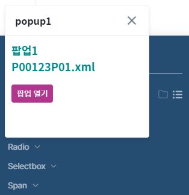
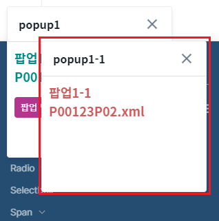
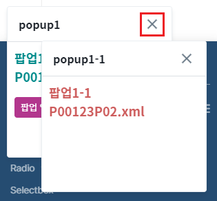
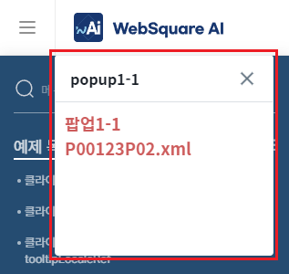
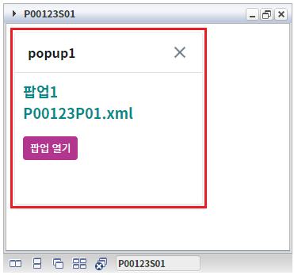
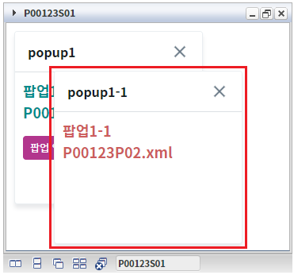
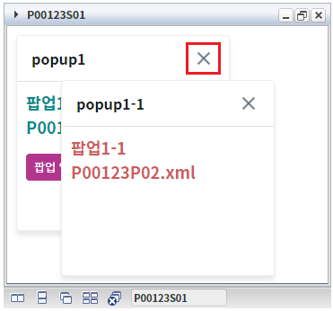
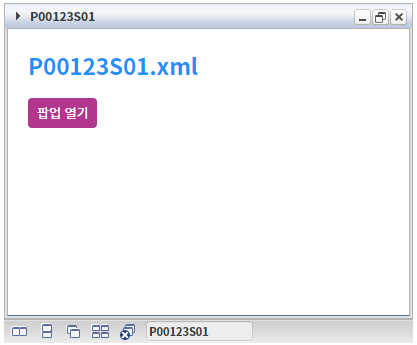
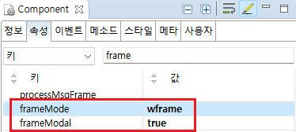

[WindowContainer] frameModal을 활성화하였을 때의 팝업 동작 비교하기
1개요
WindowContainer의 'frameModal' 속성을 활성화하였을 때 팝업의 동작을 비교하는 예제입니다. frameModal을 활성화하면 팝업이 Window 내부에서만 이동이 가능하게 되며, 팝업에서 팝업을 호출한 경우 상위 팝업을 닫으면 하위 팝업이 함께 닫힙니다.
이 기능은 WindowContainer의 속성 frameMode가 'wframe'으로 설정된 경우만 동작합니다.
2구현된 기능
기본 설정 - frameModal 비활성화
frameModal 활성화
3예제 테스트 방법
3.1기본 설정 - frameModal 비활성화
예제 영역 '기본 설정 - frameModal 비활성화'에서 테스트합니다.1
STEP 1: 생성된 윈도우에서 팝업을 호출합니다.
WindowContainer의 윈도우 'P00123S01'에서 버튼 '팝업 열기'를 클릭합니다.
Image 1.브라우저(Chrome) 실행 예시

2
STEP 2: 실행 결과를 확인합니다.
브라우저의 상단에 팝업 'popup1'이 열린 것을 확인합니다.
(디바이스에 따라 아래의 참고 이미지가 다를 수 있습니다.)
Image 2.브라우저(Chrome) 실행 예시 - PC

3
STEP 3: 팝업에서 팝업을 호출합니다.
팝업 'popup1'에서 버튼 '팝업 열기'를 클릭합니다.
4
STEP 4: 실행 결과를 확인합니다.
브라우저의 상단에 팝업 'popup1-1'이 열린 것을 확인합니다.
(디바이스에 따라 아래의 참고 이미지가 다를 수 있습니다.)
Image 3.브라우저(Chrome) 실행 예시 - PC

5
STEP 5: 상위 팝업에서 닫기 버튼을 클릭합니다.
팝업 'popup1'에서 닫기 버튼을 클릭합니다.
(디바이스에 따라 아래의 참고 이미지가 다를 수 있습니다.)
Image 4.브라우저(Chrome) 실행 예시 - PC

6
STEP 6: 실행 결과를 확인합니다.
팝업 'popup1'은 닫히고 팝업 'popup1-1'은 열려 있음을 확인합니다.
(디바이스에 따라 아래의 참고 이미지가 다를 수 있습니다.)
Image 5.브라우저(Chrome) 실행 예시 - PC

3.2frameModal 활성화
예제 영역 'frameModal 활성화'에서 테스트합니다.1
STEP 1: 생성된 윈도우에서 팝업을 호출합니다.
WindowContainer의 윈도우 'P00123S01'에서 버튼 '팝업 열기'를 클릭합니다.
Image 6.브라우저(Chrome) 실행 예시
2
STEP 2: 실행 결과를 확인합니다.
윈도우 영역에 팝업 'popup1'이 열린 것을 확인합니다.
Image 7.브라우저(Chrome) 실행 예시 - PC

3
STEP 3: 팝업에서 팝업을 호출합니다.
팝업 'popup1'에서 버튼 '팝업 열기'를 클릭합니다.
4
STEP 4: 실행 결과를 확인합니다.
윈도우 영역에 팝업 'popup1-1'이 열린 것을 확인합니다.
Image 8.브라우저(Chrome) 실행 예시 - PC

5
STEP 5: 상위 팝업에서 닫기 버튼을 클릭합니다.
팝업 'popup1'에서 닫기 버튼을 클릭합니다.
Image 9.브라우저(Chrome) 실행 예시 - PC

6
STEP 6: 실행 결과를 확인합니다.
팝업 'popup1'과 팝업 'popup1-1'이 닫힌 것을 확인합니다.
Image 10.브라우저(Chrome) 실행 예시 - PC

4구현 예시
4.1frameModal 활성화
1
STEP 1: WindowContainer의 속성을 정의합니다.
[필수] frameModal="true"
[default: false, true] popup open시 WFrame 안쪽에 팝업을 띄우고 modal을 표시할지 여부.
[필수] frameMode="wframe"
[default:iframe, wframe] 윈도우 내부 frame을 iframe으로 생성할지 wframe으로 생성할지를 결정하는 속성
Image 11.웹스퀘어 스튜디오의 Component View 예시

Example 1.Source
<!-- windowContainer 의 소스 본문 예시 --> <w2:windowContainer frameModal="true" frameMode="wframe" id="wdc_exam2"> <!-- 중략 --> </w2:windowContainer>
2
STEP 2: Window 생성 스크립트를 작성합니다.
메소드 'createWindow'를 사용하여 스크립트를 작성합니다.
Example 2.Script
//예제 파일의 경우 scwin.initPage에 작성되어 있습니다. //windowContainer "wdc_exam2"에 윈도우 생성하기 wdc_exam2.createWindow({ "title": "P00123S01", "src": "/page/P00123S01.xml", //파일명 "windowId": "w_P00123S01" });
5주요 API
frameModal
frameMode